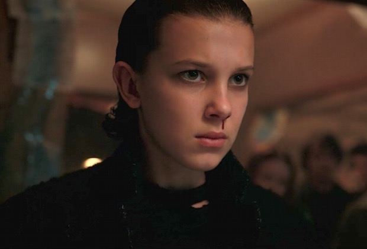
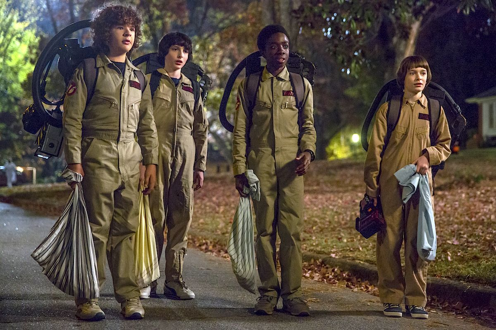
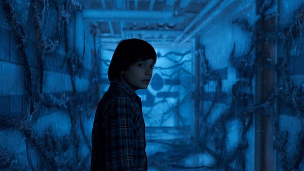

Előzetes:
Kritika
A második évad eljövetelét olyan figyelem és érdeklődés követte, mely már-már a Twin Peakset övező jelenségre emlékeztetett. Bevallom, volt bennem félelem, hogy a Duffer testvérek sorozata csak egy egyévados csoda lesz. A recept és alapok maradtak, ezzel szemben a második felvonás egy merőben más tempójú és hangulatú élményt nyújt, ami végül tökéletes döntésnek bizonyult.
Történet
1984-ben, ismételten az Indiana állambeli Hawkins kisvárosában járunk, ahol már egy év telt el Will Byers (Noah Schnapp) titokzatos eltűnése óta, mely aztán teljesen felforgatta az ottaniak életét. Mindenki azon van, hogy valahogy sikerüljön visszarázódniuk a régi kerékvárásba, ám ez - érthető módon - Byerséknek megy a legnehezebben, hiszen a fiúnak egyre gyakrabban visszatérő rémképei vannak a Tótágasban történtek óta. Hamar világossá válik, hogy a Tizenegy (Millie Bobby Brown) által megnyitott "dimenziókapu" nem zárult be magától, épp ellenkezőleg: Hawkins alatt készül valami, ami bőven túlnő a város melletti laboratórium kapuin. Az első évadból már jól ismert, azóta alaposan körberajongott csapat Tizi kivételével újra összeáll, viszont az új évad során a többiek is nagyobb szerephez jutnak, ami nagyban meghatározta a szezon sikerességét. Ahogy azt már beharangoztam, a Stranger Things nem feltétlenül szembeötlő, ámde alapos változásokon esett át. Félni szerencsére nem kell, Matt és Ross Duffer ismét azt a szerethető, stílusos, a '80-as évek esszenciáját hibátlanul megidéző kilencrészes szériát hozta el nekünk, amire megérte egy évet várni. Az események sokkal lassabban indulnak be, mint az első évad során, ami azért meglepő, mert a további részek tempójára pont ennek ellenkezője érvényes. A cselekmény továbbra is az eddig megismert szereplőkre fókuszál (egy-két új arccal kibővítve), Mike (Finn Wolfhard), Will, Dustin (Gaten Matarazzo) és Lucas (Caleb McLaughlin) csapata az eddiginél egy picit kevesebb szerephez jut, Dufferék ezzel teremtetettek több teret a többiek számára. Amiért összehasonlíthatatlan a Stranger Things két eddigi évada, az elsősorban az, hogy a lassabb, coming of age zsánerre jellemző, fiatalos történetmesélést átveszi egy sokkal feszesebb tempójú, elkalandozást nem igen engedő, sötétebb hangvételű narratíva, ami rendkívül rizikós húzás volt, mivel nem mindenkinél lesz olyan feltétlenül pozitív fogadtatása. Valahányszor megnéztem egy interjút, a show-t teljesen elrabló srácokkal, mindig furcsálltam, hogy a központi szerepet betöltő, játékidőhöz mégis hébe-hóba jutó Noah Schnapp (Will Byers, ugye) valójában miért állandó résztvevője ezeknek a beszélgetéseknek, lévén kis túlzással még néhány statiszta is több szerephez jutott. Azt nem láttam előre, hogy ez a fiatal kis színész az eljövendő évad során konkrétan a legerőteljesebb, irdatlanul emlékezetes alakítást fogja letenni az asztalra. Szegény Will továbbra is egymaga hordozza hátán Tótágas kíméletlen terhét, ami olyan jeleneteket eredményez, melyeket bármely, ördögűzéssel foglalatoskodó filmes produkció nyugodtan megirigyelhet. Míg az első évad összességében sikeredett rendkívül emlékezetesre, addig a második inkább több, önmagában felejthetetlen pillanattál ajándékozza meg a nézőt, olyanokkal, melyek alatt ténylegesen nehezére esik az embernek a levegővétel. Schnapp mellett Millie Bobby Brown is képes volt új szintre vinni karakterét, akiről direkt nem árulok el ennél többet, ugyanis az évad legnagyobb fordulatai egyértelműen Tizenegy köré épülnek. Winona Ryder kevésbé őrült, de legalább annyira tüzes, anyai ösztönökkel bíró karaktere sokkal emberközelibb volt, mint korábban, míg David Harbour maradt az egyszerre kemény, mégis roppantul szerethető rendőrfőnök szerepében. Arról a Joe Keery-ről már ne is beszéljünk, akinek Steve Harringtonja a legnagyobb karakterfejlődések egyikét mutatta be: nyálas ficsúrból badass bébiszitterré, egyben közönségkedvenccé avanzsált.
  